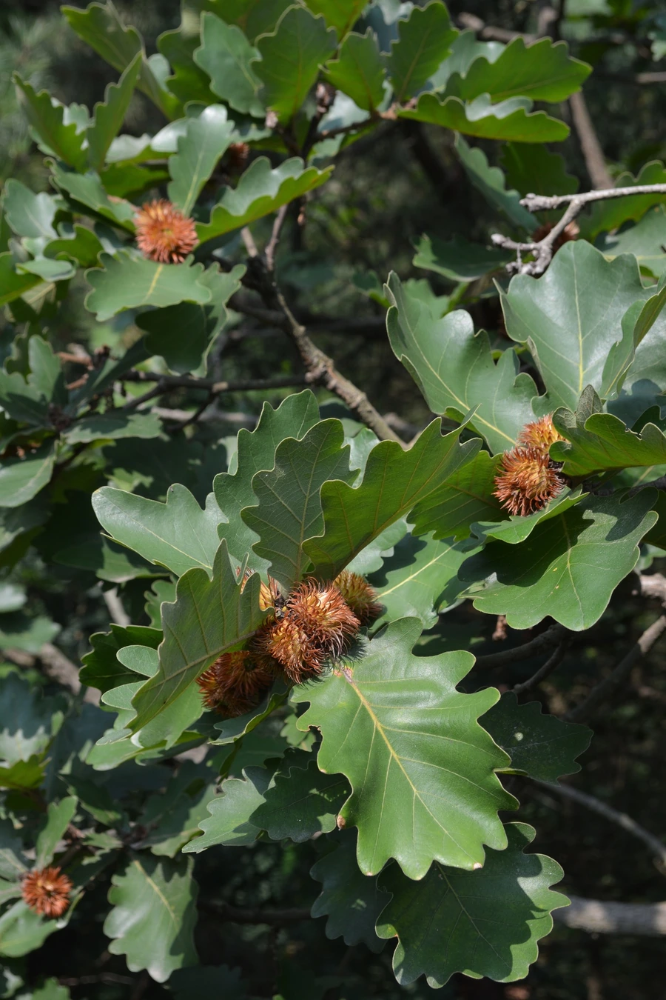

乔木 · 植物界
槲树 Quercus dentata

东亚常见的落叶乔木，叶片宽大、边缘呈波状齿，叶背密生灰黄色绒毛，橡实与壳斗可入药，叶可养柞蚕。
- 分类
- 门被子植物门纲木兰纲目壳斗目科壳斗科属栎属
- 栖息环境
- 海拔 2000 米以下的山坡、丘陵与林缘，喜光耐寒耐旱，适应性强
- 地理分布
- 中国东北、华北、西南及华中，朝鲜半岛、日本也有分布
- 保护级别
- 暂无评估；中国未列入国家重点保护野生植物名录
物种志
槲树为落叶乔木，高可达 25 m，树皮暗灰褐色、纵裂；叶片宽倒卵形至倒卵状楔形，长 10–30 cm，边缘具 4–10 对波状圆齿，叶背密被灰黄色星状绒毛，叶柄极短。雌雄同株，雄花序为下垂葇荑花序，雌花单生或簇生；壳斗杯形，苞片狭披针形、反曲，坚果卵圆形，长 1.5–2.5 cm。
槲树分布于中国东北、华北至西南及朝鲜半岛、日本，喜光、耐寒、耐旱，适应性强，常生于山坡、丘陵与林缘，是北方落叶阔叶林的重要组成树种。木材坚硬，可供建筑、家具与薪炭用；叶可饲养柞蚕；树皮与壳斗含单宁，可提取栲胶；坚果可酿酒或作饲料。槲树叶片硕大、秋色黄褐，也是山地景观树种，在朝鲜半岛与日本文化中常被视为乡野生活的象征。
形态与习性
- 株高可达 25 m，树皮暗灰褐色
- 花期4–5 月，雄花序下垂
- 果期9–10 月，壳斗苞片反曲
- 光照喜光，不耐长期荫蔽
- 水分耐旱，怕积水
- 土壤适应性强，酸性至微碱性土壤均可生长
- 主要用途建筑与家具用材、养柞蚕、树皮壳斗提取栲胶
趣味知识
- 槲树叶背密生灰黄色绒毛，叶片宽大，是槲树最易辨认的特征。
- 槲树的叶子可以饲养柞蚕，是山区重要的养蚕饲料。
- 槲树壳斗的苞片向外反曲，像一圈小刺，与其他栎类容易区分。
- 在朝鲜半岛与日本，槲树常被视为乡野与传统生活的象征。